Ingredient-aware hierarchical frequency fusion for single-image food nutrition estimation.
From a single RGB photo — plus an optional ingredient list — we estimate calories, mass, fat, carbs, and protein.
RGB and DA3 depth pass through a dual ConvNeXt-Base + ISM stack; CLIP-encoded ingredient text conditions both the frequency-domain fusion (IC-FAFM) and the prediction head (IA-MPH).
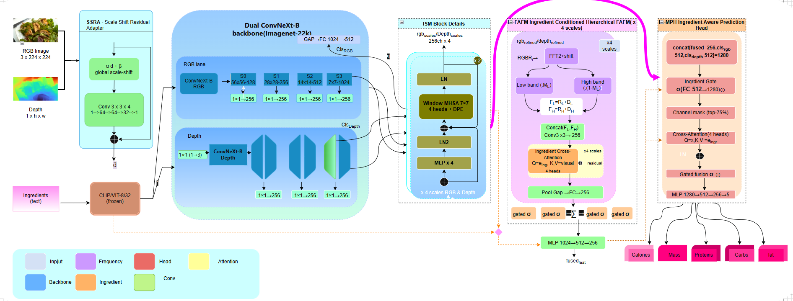
Refines DA3 monocular depth via global scale-shift + a local CNN residual.
Two ImageNet-22k pretrained backbones with window-attention refinement at 4 scales.
FFT split + ingredient cross-attention fuses RGB and depth at every scale.
Ingredient-gated channel selection + cross-attention head predicts 5 nutrients.
| Method | Venue | Cal | Mass | Fat | Carb | Prot | Mean ↓ |
|---|---|---|---|---|---|---|---|
| Google-Nutrition-rgbd | CVPR'21 | 18.8 | 18.9 | 18.1 | 23.8 | 20.9 | 20.1% |
| Swin-Nutrition | Foods'22 | 15.3 | 12.5 | 22.1 | 20.8 | 15.4 | 17.2% |
| DPF-Nutrition | Foods'23 | 14.7 | 10.6 | 22.6 | 20.7 | 20.2 | 17.8% |
| OmniFood8K | CVPR'26 | 14.1 | 10.2 | 21.0 | 18.9 | 18.4 | 16.5% |
| NuNet (real depth) | TMM'25 | 12.80 | 8.72 | 19.67 | 18.66 | 18.42 | 15.65% |
| IGSMNet | Foods'25 | 12.2 | 9.4 | 19.1 | 18.3 | 16.0 | 15.0% |
| IGSMNet (our re-run) | — | 13.6 | 11.4 | 17.6 | 15.5 | 14.4 | 14.49% |
| NutriVision (ours) | — | 12.65 | 10.37 | 16.45 | 14.76 | 13.35 | 13.52% |
| Method | Setting | Cal | Mass | Fat | Carb | Prot | Mean ↓ |
|---|---|---|---|---|---|---|---|
| ConvNeXt (best baseline, Yu et al. Tab. 3) | RGB only | 10.1 | 5.6 | 10.8 | 9.5 | 13.3 | 9.8% |
| OmniFood8K (Yu et al., full SSRA+FAFM+MPH) | RGB → est. depth | 8.8 | 4.5 | 9.5 | 8.0 | 12.6 | 8.6% |
| NutriVision (ours, synth → 8K finetune, 30 epochs) | RGB + ingr + DA3 depth | 9.4 | 7.8 | 10.6 | 13.1 | 13.6 | 10.89% |
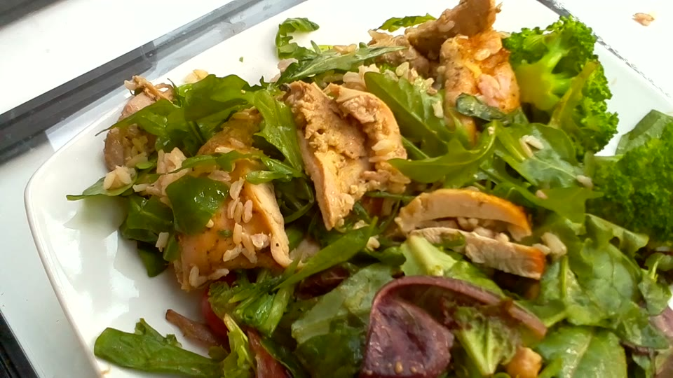
chicken thighs, broccoli, chickpeas, arugula, brown rice, olive oil, lemon
| Nutrient | Ground truth | Our prediction |
|---|---|---|
| Calories | 686 kcal | 699 kcal |
| Mass | 448 g | 415 g |
| Fat | 36 g | 32 g |
| Carbs | 31 g | 32 g |
| Protein | 59 g | 66 g |
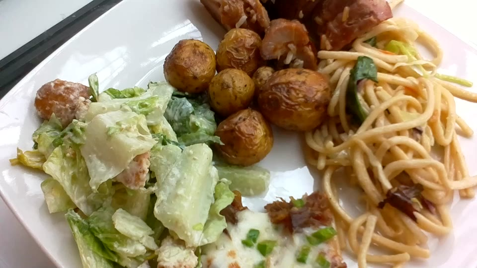
caesar salad, roasted potatoes, pork, rice noodles, mixed greens, soy sauce
| Nutrient | Ground truth | Our prediction |
|---|---|---|
| Calories | 664 kcal | 735 kcal |
| Mass | 479 g | 494 g |
| Fat | 28 g | 25 g |
| Carbs | 66 g | 58 g |
| Protein | 36 g | 36 g |
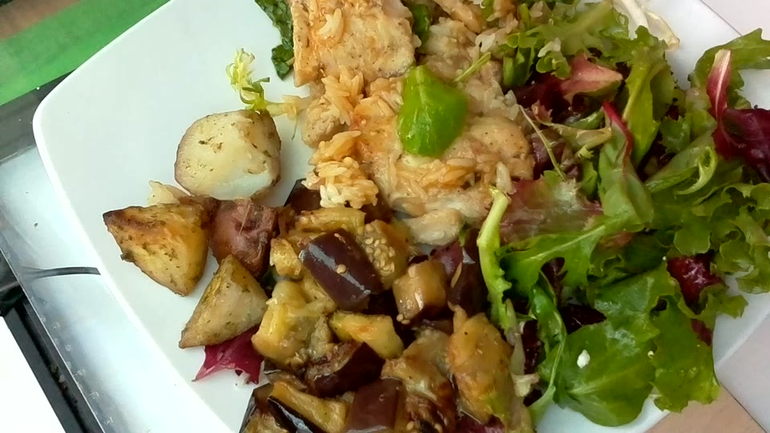
fish, eggplant, cherry tomatoes, chard, chive, celery root
| Nutrient | Ground truth | Our prediction |
|---|---|---|
| Calories | 385 kcal | 396 kcal |
| Mass | 360 g | 391 g |
| Fat | 18 g | 19 g |
| Carbs | 44 g | 41 g |
| Protein | 14 g | 12 g |
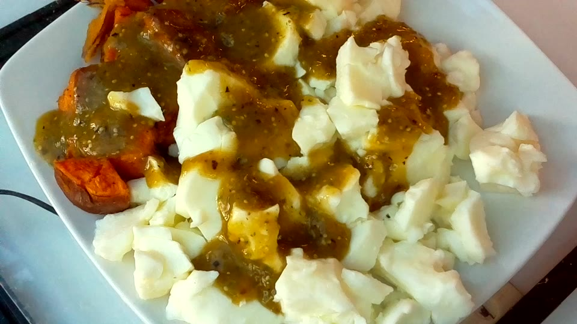
egg whites, sweet potato, olive oil, salsa
| Nutrient | Ground truth | Our prediction |
|---|---|---|
| Calories | 490 kcal | 444 kcal |
| Mass | 380 g | 383 g |
| Fat | 8.0 g | 9.1 g |
| Carbs | 62 g | 67 g |
| Protein | 18 g | 17 g |
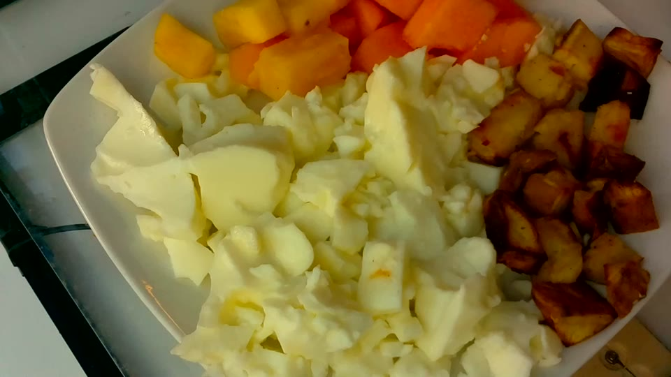
egg whites, cantaloupe, pineapple, sweet potato, olive oil
| Nutrient | Ground truth | Our prediction |
|---|---|---|
| Calories | 402 kcal | 373 kcal |
| Mass | 410 g | 376 g |
| Fat | 14 g | 14 g |
| Carbs | 50 g | 56 g |
| Protein | 12 g | 13 g |
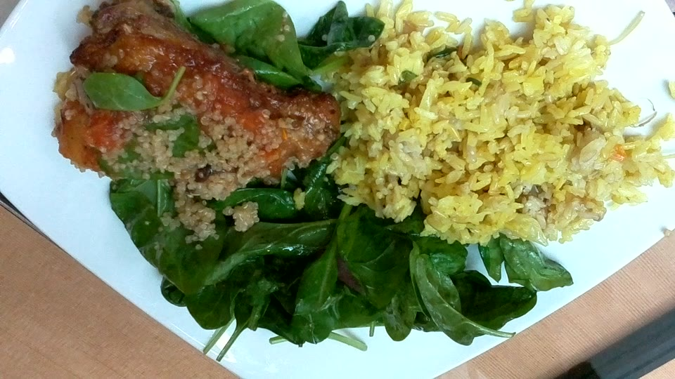
fried rice, chicken, bell peppers, blueberries, garlic
| Nutrient | Ground truth | Our prediction |
|---|---|---|
| Calories | 489 kcal | 520 kcal |
| Mass | 340 g | 324 g |
| Fat | 15 g | 13 g |
| Carbs | 62 g | 60 g |
| Protein | 28 g | 31 g |
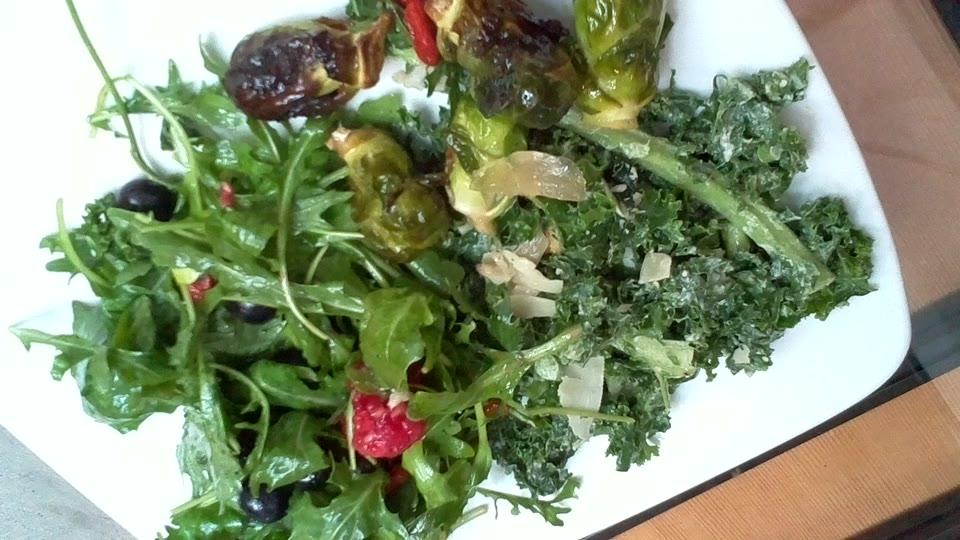
brussels sprouts, apple, arugula, bulgur, caesar dressing
| Nutrient | Ground truth | Our prediction |
|---|---|---|
| Calories | 226 kcal | 248 kcal |
| Mass | 290 g | 308 g |
| Fat | 9.0 g | 8.5 g |
| Carbs | 30 g | 26 g |
| Protein | 8.0 g | 7.6 g |
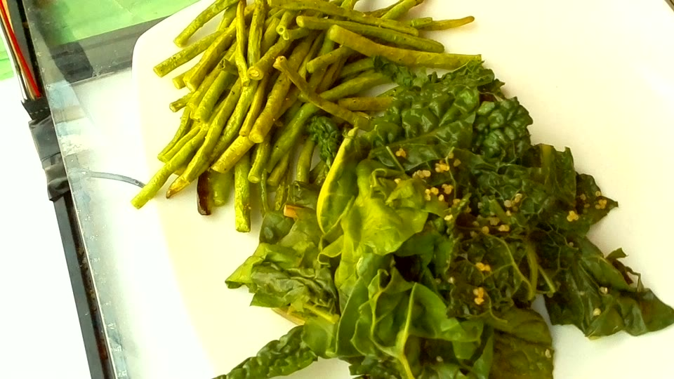
green beans, kale, mushrooms, olive oil, garlic, lemon
| Nutrient | Ground truth | Our prediction |
|---|---|---|
| Calories | 180 kcal | 177 kcal |
| Mass | 260 g | 279 g |
| Fat | 11 g | 12 g |
| Carbs | 18 g | 18 g |
| Protein | 7.0 g | 6.2 g |
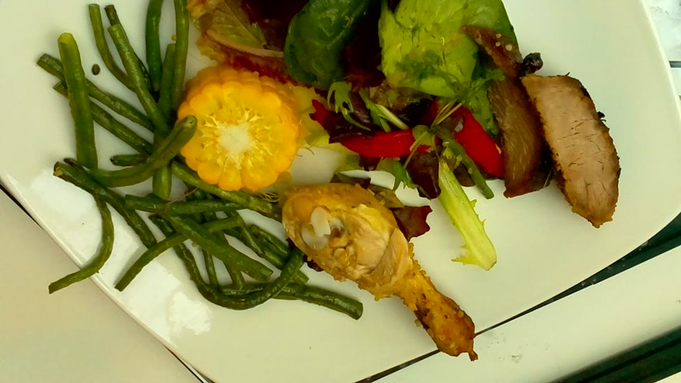
chicken breast, corn, carrots, mixed greens, olive oil
| Nutrient | Ground truth | Our prediction |
|---|---|---|
| Calories | 395 kcal | 353 kcal |
| Mass | 350 g | 339 g |
| Fat | 13 g | 14 g |
| Carbs | 38 g | 42 g |
| Protein | 32 g | 32 g |
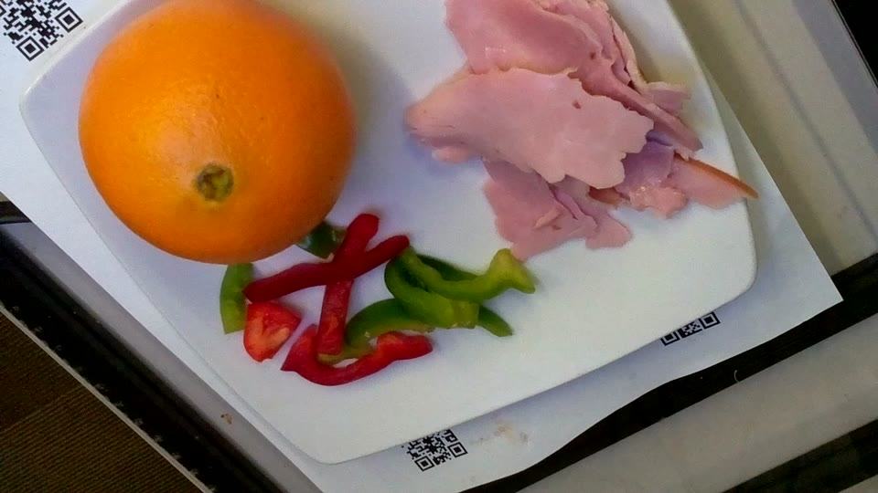
ham, oranges, bell peppers, mixed greens, olive oil
| Nutrient | Ground truth | Our prediction |
|---|---|---|
| Calories | 310 kcal | 301 kcal |
| Mass | 320 g | 292 g |
| Fat | 14 g | 13 g |
| Carbs | 28 g | 30 g |
| Protein | 22 g | 24 g |
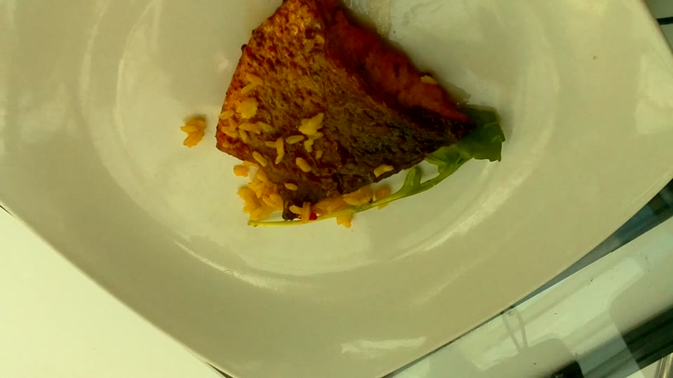
salmon, brown rice, broccoli, lemon, olive oil
| Nutrient | Ground truth | Our prediction |
|---|---|---|
| Calories | 540 kcal | 591 kcal |
| Mass | 380 g | 377 g |
| Fat | 24 g | 21 g |
| Carbs | 38 g | 35 g |
| Protein | 38 g | 40 g |
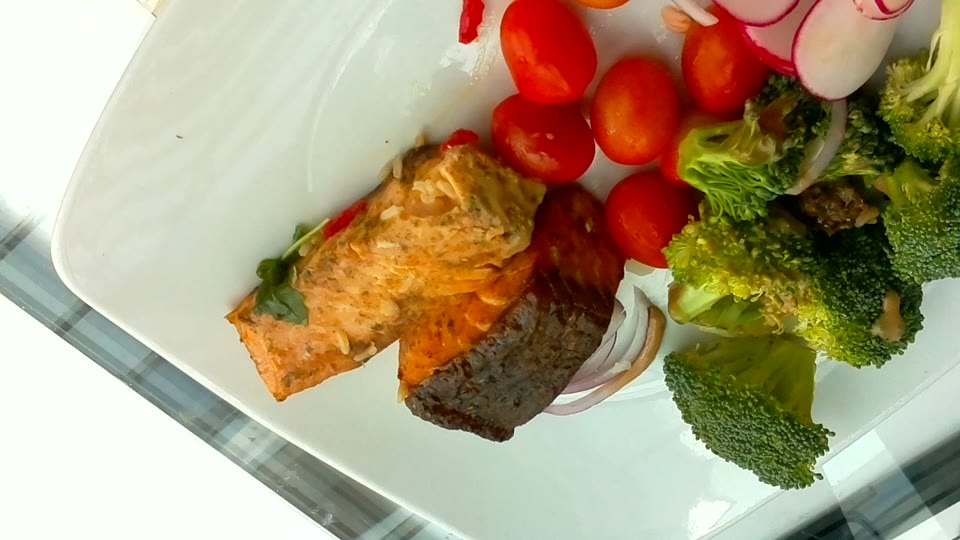
salmon, broccoli, garlic, olive oil, lemon
| Nutrient | Ground truth | Our prediction |
|---|---|---|
| Calories | 420 kcal | 450 kcal |
| Mass | 320 g | 347 g |
| Fat | 22 g | 22 g |
| Carbs | 16 g | 14 g |
| Protein | 36 g | 33 g |
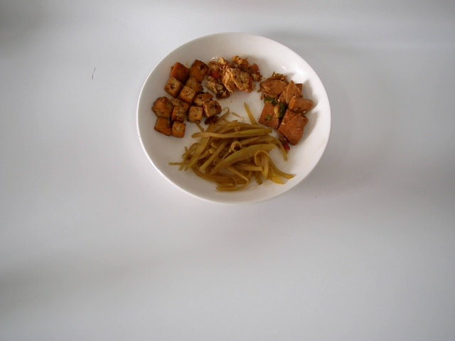
tofu, green beans, doubanjiang chili paste, scallion, cooking oil
| Nutrient | Ground truth | Our prediction |
|---|---|---|
| Calories | 320 kcal | 324 kcal |
| Mass | 174 g | 164 g |
| Fat | 13.3 g | 12.3 g |
| Carbs | 21.5 g | 22.0 g |
| Protein | 18.6 g | 20.7 g |
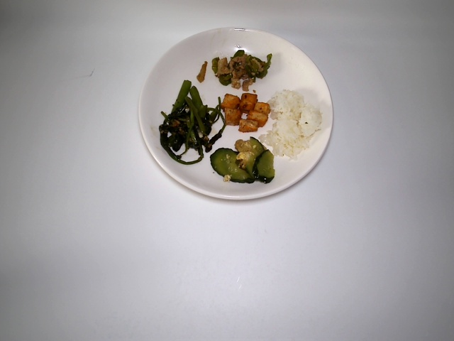
water spinach, steamed rice, green pepper, egg, ginger
| Nutrient | Ground truth | Our prediction |
|---|---|---|
| Calories | 256 kcal | 276 kcal |
| Mass | 142 g | 145 g |
| Fat | 7.9 g | 7.4 g |
| Carbs | 18.0 g | 16.2 g |
| Protein | 16.0 g | 16.0 g |
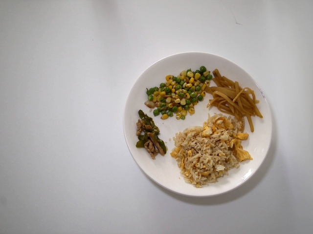
egg, fried rice, peas, sweet corn, eggplant, scallion
| Nutrient | Ground truth | Our prediction |
|---|---|---|
| Calories | 303 kcal | 310 kcal |
| Mass | 156 g | 166 g |
| Fat | 8.4 g | 8.8 g |
| Carbs | 15.7 g | 14.7 g |
| Protein | 32.6 g | 28.9 g |
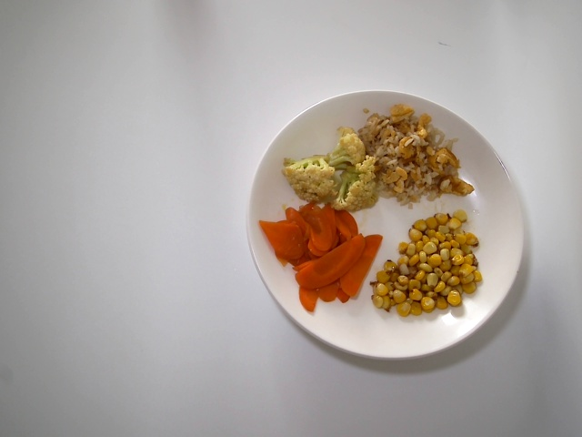
cauliflower, steamed rice, carrots, sweet corn, lotus root
| Nutrient | Ground truth | Our prediction |
|---|---|---|
| Calories | 316 kcal | 294 kcal |
| Mass | 148 g | 149 g |
| Fat | 4.1 g | 4.5 g |
| Carbs | 22.7 g | 24.3 g |
| Protein | 24.3 g | 23.0 g |
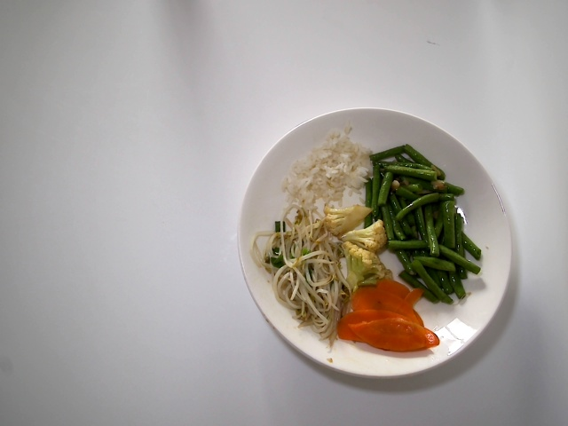
bean sprouts, steamed rice, green beans, cauliflower, carrots
| Nutrient | Ground truth | Our prediction |
|---|---|---|
| Calories | 271 kcal | 257 kcal |
| Mass | 170 g | 159 g |
| Fat | 4.5 g | 4.5 g |
| Carbs | 20.8 g | 22.9 g |
| Protein | 17.0 g | 18.5 g |
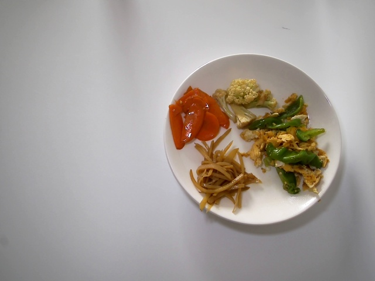
egg, green pepper, cauliflower, carrot, rice noodles, long beans
| Nutrient | Ground truth | Our prediction |
|---|---|---|
| Calories | 256 kcal | 268 kcal |
| Mass | 158 g | 153 g |
| Fat | 7.5 g | 6.8 g |
| Carbs | 19.9 g | 19.3 g |
| Protein | 12.3 g | 13.4 g |
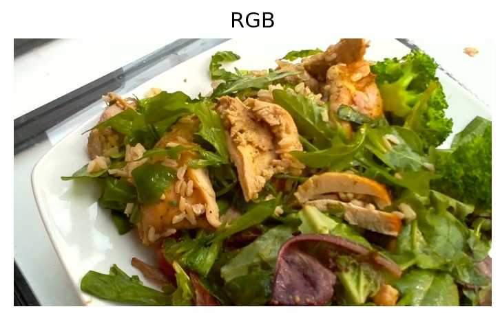
One 384 × 384 photo. No depth sensor, no rig.
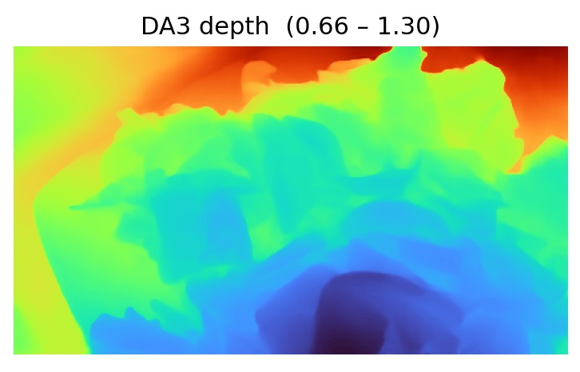
DepthAnything V3 — relative depth from RGB. Warm = near, cold = far.
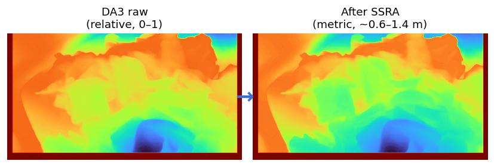
Learns a per-image affine + small CNN residual to give depth a metric feel.
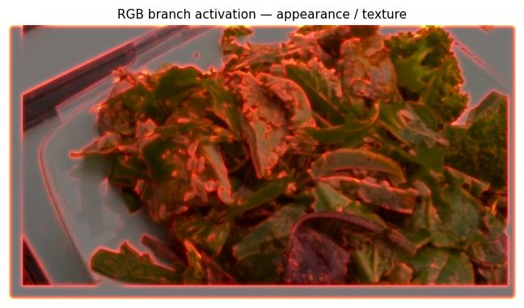
ConvNeXt-B + ISM lights up on texture, gloss, char, leaf veins — calorie cues.
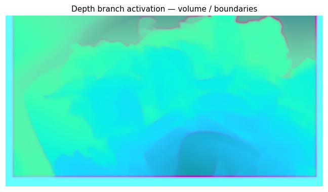
Parallel ConvNeXt-B lights up on mound height, boundaries, occlusion — gram cues.
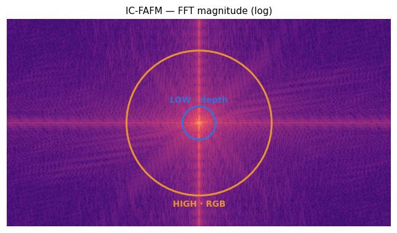
2-D FFT splits each map. Depth → low band, RGB → high band; CLIP(ingredients) gates the mix.
Ingredient-gated head → calories, mass, fat, carbs, protein.
Upload a plated-meal photo. Auto-suggest will hint at the ingredients via BLIP + CLIP; you can edit before predicting. Expected error band: ±13.52% PMAE.